Lesson One - The RAMP Risk Management System
Your learning outcomes
After completing this lesson, you will be able to:
Recognize that the RAMP concept is an effective chemical management system.
Identify the Globally Harmonized System of Classification and Labelling of Chemicals (GHS) label elements.
Use the GHS to recognize chemical hazards.
Your responsability to manage a safe classroom
Science teachers have a duty or standard-of-care obligation to manage their classroom chemicals and equipment responsibly to ensure the health and safety of all. The National Science Teaching Association explains laboratory liability for science teachers.
To meet this obligation, you need to be able to recognize the hazards of chemicals and manage the associated risks.
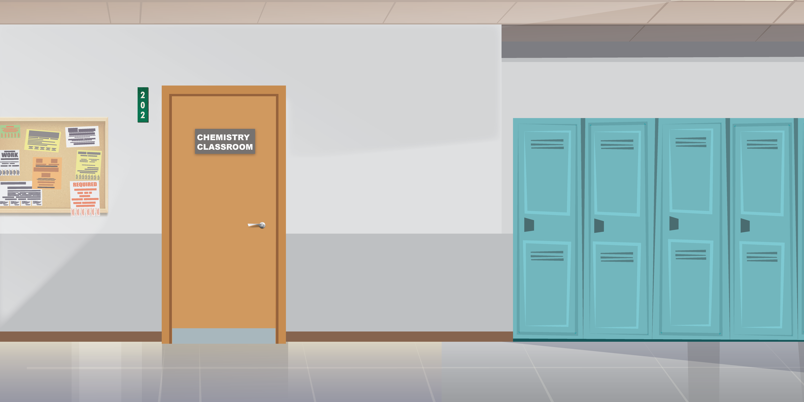
RAMP
You can make your classroom space safer by using a risk management system.
The RAMP risk management system can be applied to your classroom, an experiment, or a demonstration – it is a way of thinking.
This course uses the RAMP system to help you with chemical management in the classroom.
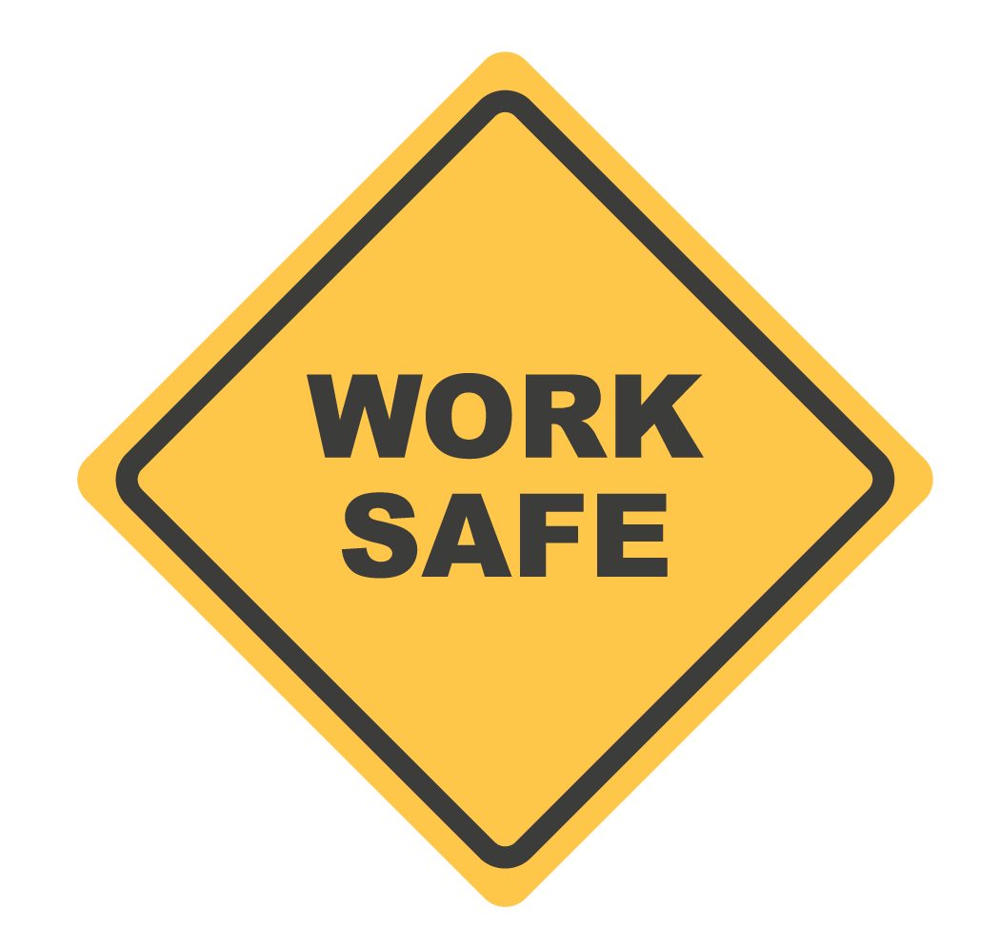
RAMP
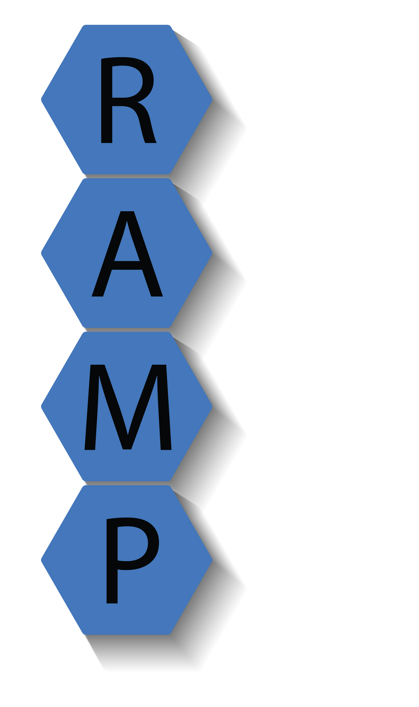
RAMP stands for
Recognize hazards
Assess the risks of the hazards
Minimize the risks of the hazards, and
Prepare for emergencies.
Using the RAMP Management System

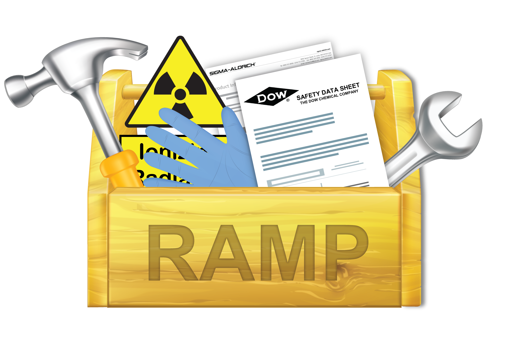
The American Chemical Society (ACS) recommends using the RAMP management system to integrate safety into all aspects of chemistry work - including instruction.
The next slide shows a short video about the RAMP management system in high school classrooms. Five additional videos that introduce RAMP to your students are available on the ACS YouTube channel.
RAMP para professores - Vídeo
O vídeo discute a segurança em laboratório para professores, enfatizando o uso do acrônimo RAMP, que significa Reconhecer perigos, Avaliar riscos, Minimizar riscos e Preparar-se para emergências.
Os professores são aconselhados a revisar três documentos de recursos antes de cada laboratório: o guia do professor, materiais para os alunos (incluindo procedimentos) e fichas de dados de segurança.
Os professores devem identificar perigos conhecidos em experimentos, avaliar os riscos associados a eles e tomar medidas para minimizar a exposição e garantir a segurança dos alunos, incluindo o uso de equipamentos de proteção pessoal.
O vídeo recomenda envolver os alunos na segurança do laboratório, fazendo com que eles preencham o modelo RAMP em grupos e criem cartazes de segurança para o laboratório.
Preparar o equipamento, rotular corretamente os produtos químicos e garantir a disponibilidade de equipamentos de segurança e equipamentos de proteção pessoal são etapas cruciais para garantir uma experiência segura em laboratório para os alunos.
Transcrição do vídeo
Como professor, existem passos que você pode tomar para garantir que seus alunos estejam o mais seguros possível ao explorar e experimentar no laboratório. Neste vídeo, vamos discutir algumas ideias para ajudá-lo a pensar e configurar um experimento de laboratório seguro. Vamos usar RAMP, o acrônimo para segurança no laboratório. RAMP significa R, reconhecer perigos, A, avaliar riscos, M, minimizar riscos, e P, preparar-se para emergências. RAMP é uma ferramenta simples, porém poderosa, para ajudá-lo a se preparar e realizar com segurança qualquer atividade de laboratório com seus alunos.
Existem três documentos de recursos que você deve revisar antes de cada laboratório: o guia do professor, os materiais dos alunos, incluindo quaisquer procedimentos, e também as fichas de dados de segurança. Primeiro, estude o procedimento do laboratório para revisar as técnicas utilizadas e a ciência envolvida. Em seguida, faça a si mesmo algumas perguntas. Quais são os perigos conhecidos neste experimento? Lembre-se de que os produtos químicos não são os únicos perigos; pense também em quaisquer perigos relacionados a equipamentos ou procedimentos. Em seguida, quais são os riscos de trabalhar com esses perigos? Como posso minimizar a exposição a produtos químicos e reduzir quaisquer riscos devido às suas reações químicas, como inflamabilidade ou reatividade com a água? Que precauções de segurança são necessárias para garantir que os alunos não se machuquem devido a quaisquer perigos físicos? Que equipamento de proteção pessoal os alunos devem usar? Que equipamento de segurança deve estar pronto e ser demonstrado? E, finalmente, o que eu faria se ocorresse uma emergência? Um recurso útil para compilar e organizar essas informações é o modelo RAMP. Você pode baixar este documento no site da ACS.
Depois de ler o experimento sob a perspectiva do RAMP, é útil revisá-lo para determinar o que precisa ser demonstrado ou explicado em mais detalhes. Técnica deficiente, especialmente no nível do ensino médio, causa muitos incidentes e acidentes. Quaisquer técnicas desconhecidas ou novas devem ser demonstradas. Por exemplo, como acender um bico de Bunsen, como manusear um cadinho ou aquecer um tubo de ensaio, como usar uma bureta e técnica adequada de filtração ou decantação. Além disso, verifique se os procedimentos fornecidos aos alunos têm precauções de segurança adequadas. Essas precauções devem ser dadas verbalmente e por escrito e devem ser revisadas antes e durante o experimento. Também pode ser útil envolver os alunos na segurança do laboratório, fazendo com que eles preencham o modelo RAMP em grupos e depois se revezem apresentando conceitos de segurança para cada laboratório. Outra boa maneira de envolver seus alunos é fazer com que eles criem cartazes de segurança para pendurar no laboratório. Você pode se surpreender com a criatividade de seus alunos.
Finalmente, revise as fichas de dados de segurança para todos os produtos químicos. Leia-as para confirmar os perigos, riscos, manuseio e técnicas de descarte. Também é imperativo pensar no descarte de produtos químicos. Será que uma pia ou lixeira será apropriada e segura? Ou será necessário preparar recipientes de descarte? E ao preparar os recipientes de descarte, é essencial que eles sejam devidamente etiquetados para evitar a mistura acidental de materiais incompatíveis. Depois de identificar e registrar áreas de preocupação, é hora de preparar o equipamento e qualquer vidraria especial que possa ser necessária. Verifique se todo o equipamento está em perfeito estado de funcionamento.
Além disso, pense em como você irá fornecer produtos químicos aos alunos. Se for de um local central, instrua os grupos a enviar um aluno para obter produtos químicos para o experimento; isso reduzirá o tráfego no laboratório e ajudará a evitar colisões acidentais. Alternativamente, você pode transferir produtos químicos para pequenas garrafas de conta-gotas ou outros recipientes antes da aula e colocá-los em cada bancada de laboratório para uso dos alunos. De qualquer maneira, certifique-se de que todas as garrafas estejam rotuladas corretamente com a fórmula química, a data e a concentração. Também é vital incluir informações básicas sobre perigos em quaisquer garrafas de redistribuição secundária. Uma maneira fácil de fazer isso é imprimir ou comprar adesivos que mostrem os pictogramas de perigo apropriados do GHS para cada produto químico com base em suas fichas de dados de segurança.
Em seguida, verifique os equipamentos de segurança e equipamentos de proteção pessoal para garantir que estejam disponíveis e funcionando corretamente. Toalhas de papel, pás de lixo, cestos de lixo e recipientes para vidro quebrado devem estar prontos caso ocorram derramamentos ou quebras acidentais. Quando a aula prática começar, verifique se toda a comida e bebida foram removidas. Certifique-se de que distrações como telefones, jogos e livros não relacionados à aula sejam removidas das bancadas do laboratório. Verifique se os corredores estão livres de mochilas ou papéis que possam causar tropeços ou quedas. Finalmente, certifique-se de que os alunos estejam usando o equipamento de proteção pessoal adequado. Feito isso, você estará pronto para que todos tenham uma experiência de laboratório segura e gratificante.
Checklist
- Quais são os perigos conhecidos?
- Quais são os riscos?
- Como eu posso minimizar a exposição?
- Como posso reduzir os riscos?
- Quais precauções de segurança são necessárias?
- Quais EPIS devem ser utilizados?
- Quais equipamentos de segurança devem estar prontos e ser demonstrados?
- O quê eu devo fazer se uma emergência ocorrer?
Formulário de aplicação do sistema RAMP para atividades de laboratório
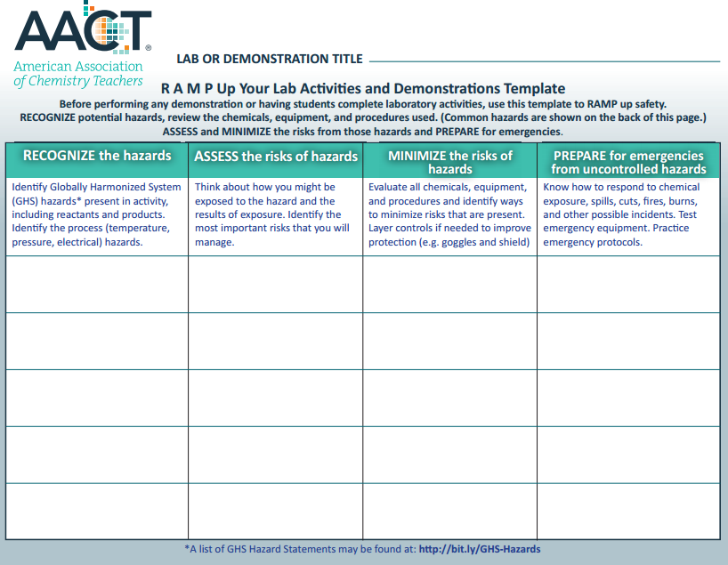
Frases de perigo do GHS
Uma lista com frases de perigo do GHS pode ser encontrada em: http://bit.ly/GHS-Hazards
GHS hazard statement means a standard phrase assigned to a hazard class and category to describe the nature and severity of a chemical hazard. Each hazard statement is designated a code, starting with the letter H and followed by 3 digits.
H2xx: Physical hazards;
H3xx: Health hazards;
H4xx: Environmental hazards.
It shall be noted that the H code is used for reference purpose only. It is the actual phrase which should appear on labels and safety data sheets.
Classes de riscos e categorias do GHS:
http://www.chemsafetypro.com/Topics/GHS/GHS_hazard_class.html
GHS describes the nature and severity of a chemical hazard by hazard class and hazard category:
GHS hazard class represents the nature of a chemical hazard, i.e., flammable liquids, carcinogen.
GHS hazard category is the division of criteria within each hazard class. For example, hazard class flammable liquids can be divided into 4 categories among which flammable liquids category 1 represents the most severe hazard.
There are 29 GHS hazard classes in total in UN GHS Rev. 6. They are used to describe 3 main types of chemical hazards: physical hazards, health hazards and environmental hazards. If you wish to find hazard statements and signal word for each hazard category, please use our hazard statement and signal word finder.
| Physical Hazards (17 classes) |
|
| Health Hazards (10 classes) |
|
| Environmental Hazards (2 classes) |
|
Reconhecendo Perigos Químicos
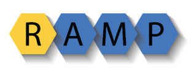
Before you begin to organize a chemical storeroom or prepare reagents for experiments, you must recognize and understand chemical hazards.
At this point, being able to distinguish hazard and risk is important.
Hazards are potential sources of harm intrinsic to chemicals and equipment.
Risk is the liklihood that a hazard will cause harm.
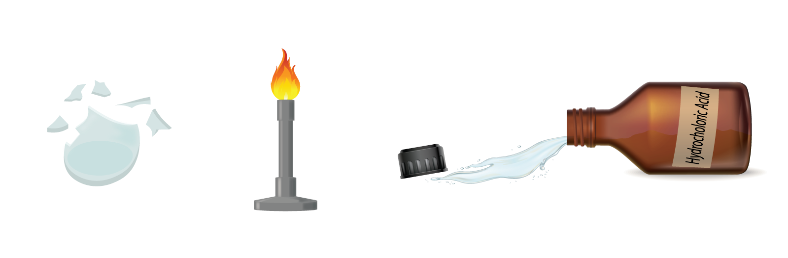
Recognizing Chemical Hazards
In the science classroom, hazards and risks must be managed so that you and your students are in a safe environment.
Teaching science requires working with both chemical and physical hazards. In this lesson, you will learn about recognizing chemical hazards.
Self-Check 1: RAMP & Risk Management
Question 1
Hazards are defined as: (Select the best answer)
Select one:
Question 2
To maintain the safest learning environment possible while providing science instruction, the National Science Teaching Association (NSTA) recommends that: (Select the best answer.)
Question 3
As discussed in the ACS video about using RAMP, which of the following is NOT one of the three resources recommended for teachers to review before each experiment? (Select the best answer)
Question 4
The RAMP framework is appropriate for use in: (Select the best answer.)
GHS
Reconhecendo Perigos Químicos
The best system available to help those who use and transport chemicals recognize hazards is the Globally Harmonized System of Classification and Labelling of Chemicals or GHS.
In 2012, the GHS was adopted in the United States.
O que é o GHS
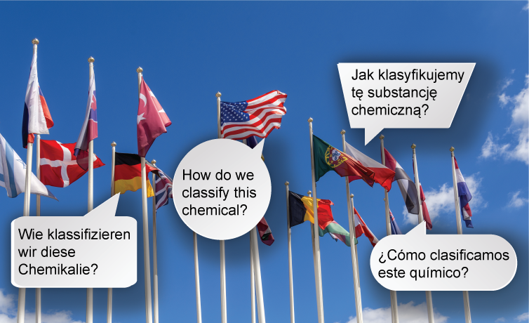
The Globally Harmonized System of Classification and Labelling of Chemicals or GHS is an international approach to communicating chemical hazards.
In GHS, chemicals are grouped, classified, and categorized based on their hazards.
Por que o GHS é útil internacionalmente?
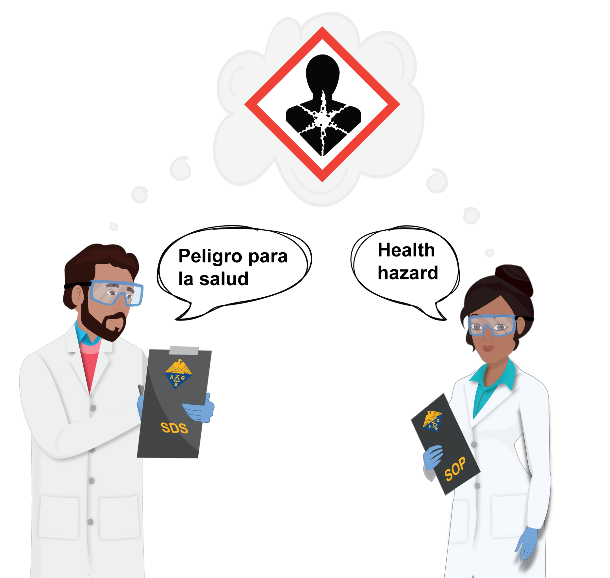
The GHS transcends language by using alphanumeric codes and pictograms.
Anyone who uses chemicals in the workplace has an obligation to understand the system.
Quais são as ferramentas do GHS?
The GHS uses label elements and a standard format for Safety Data Sheets (SDSs) to communicate hazards.
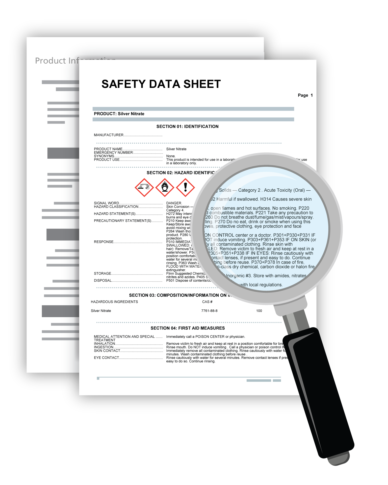
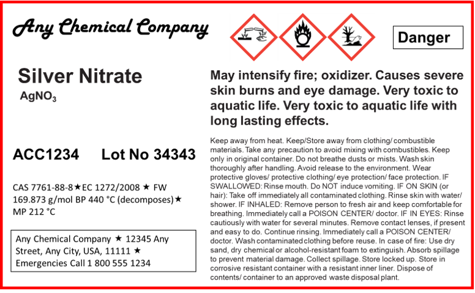
Grupos do GHS
Há três grandes grupos de perigo no GHS
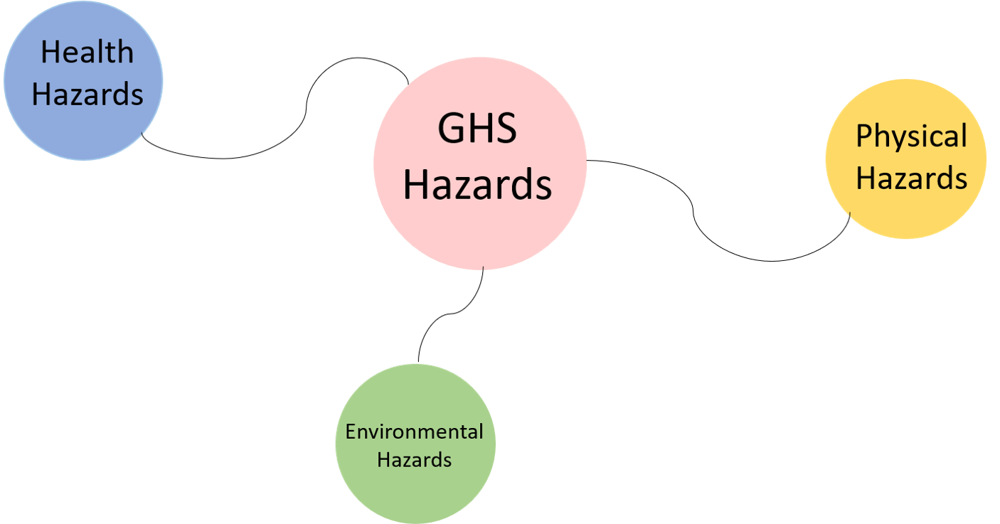
Chemicals with health hazard classification cause, or are anticipated to cause injury, illness, or disease in humans.
- Chemicals that are toxic or carcinogenic have health hazards.
In the GHS, the physical hazards posed by chemicals are those that can be defined by physical properties or stability testing criteria.
Chemicals that are flammable, are explosive, or act as oxidizers have physical hazards,
Uncontrolled physical hazards can cause damage to people or property.
Environmental hazards threaten the aquatic environment or the ozone layer.
Classes do GHS
What about Classification within the Groups?
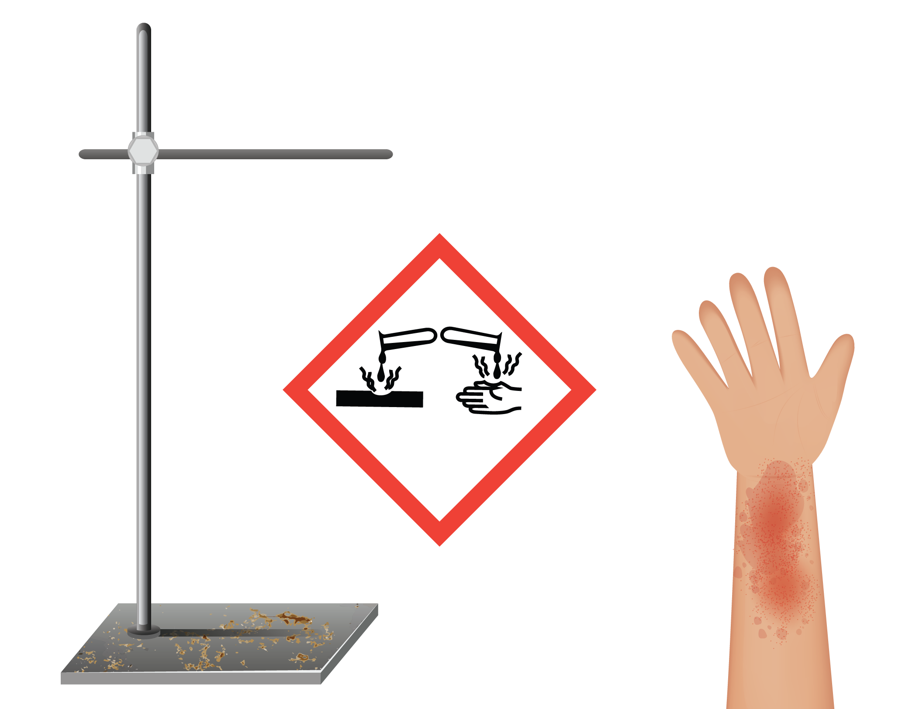
There are:
17 physical hazard classifications,
10 health hazard classifications, and
2 environmental hazard classifications.
Corrosive chemicals have a hazard class in both the health hazard and physical hazard groups:
Corrosive to skin and eyes (health hazard), and
Corrosive to metals (physical hazard).
A full class schema is shown next.
Classes de perigos do GHS
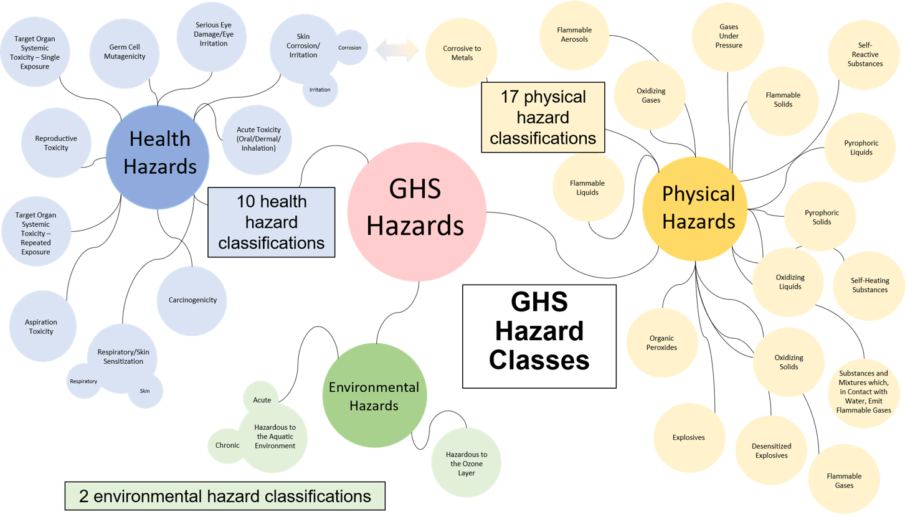
Categorias do GHS
O que são categorias de perigos?
Categories are generally established on the basis of some measurable quantity, and the number of categories in each hazard class varies.
The most hazardous chemicals in each class are always placed in the lowest category – regardless of how many categories there are in the class.
Categories have been added to the schema in the next slide.
- Categoria de perigos mais severos
- Categoria de perigos menos severos
Categorias de Perigos do GHS
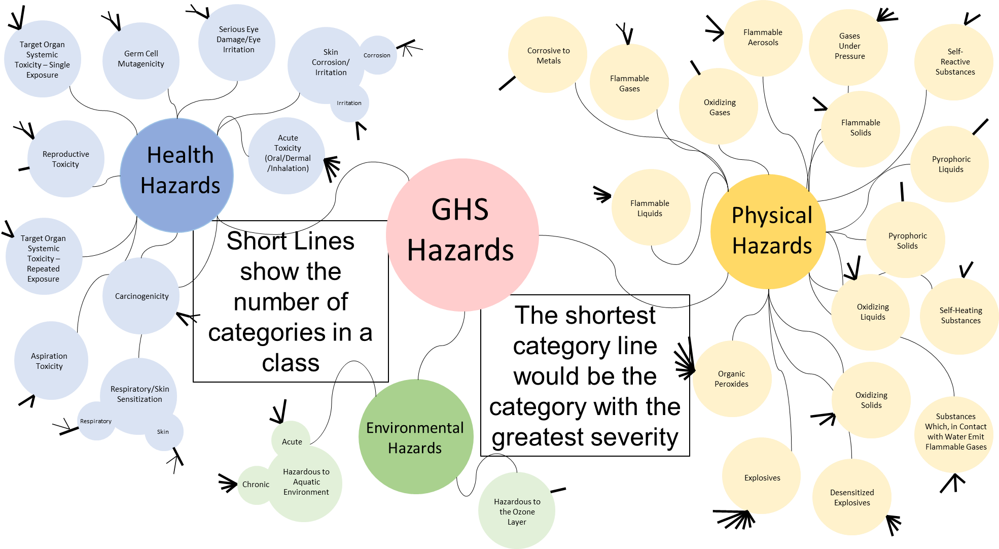
Resumindo
Grupo de Perigo
No GHS HÁ